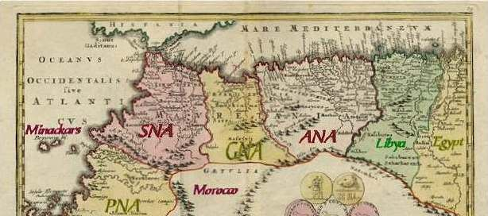
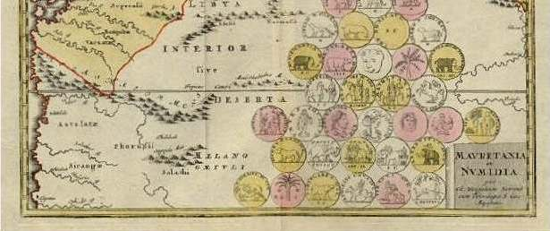
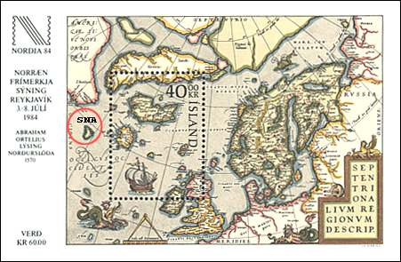
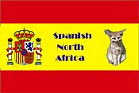
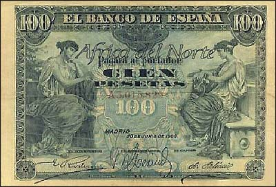
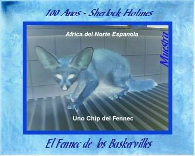

|
Created
11/01/01. Revised:
01/09/03. |
|
| Dedicated to Blair Stannard from
Canada, the father of the SNA. |
"Abandon every hope, who enter here" |
This site is dedicated to the most quickly progressing domain of the modern philately - the Spanish North Africa. The site is the place where the stamp collectors from the whole world can not only find the latest information pertaining to their hobby, but especially they can profit by an oasis of peace of mind, in the middle of their pairs. It is expected that all visitors will find good reasons to leave this site in high spirits; the newcomers should feel an irresistible desire to immediately start with the stamp collecting, at best of course with the renown SNA stamps.
Spanish North Africa, contrary to popular belief, does in fact exist. The mostly accepted theory says that it can be found somewhere on the northern Moroccan coast of Africa, west of German North Africa, east of Minackars and north-east of Portuguese North Africa.
 |
 |
According to an alternative theory, some Scandinavian historicists, for reasons known only by themselves, have placed the Spanish North Africa near Iceland, a fact confirmed (in their opinion) by the cartographer Abraham Ortelius (as marked below by a red circle on one of his maps, dated 1570).

In Africa, it is Spain that felt the need to subdivide Spanish Morocco and Spanish Sahara after many years in rebel infighting. As result, the Spanish North Africa, a political and administrative enclave, was allowed self-ruling.
The capital city of Spanish North Africa is Ciudad de Leon (sometimes it appears under the alternative name of Ciedad de Leon), and is on the northernmost coast of SNA.
The SNA is a fully independent and free republic, ruled by a SNA Revolutionary Committee. SNARC is formed of seven wise men who are usually named The Immor(t)als; they are elected for life. Several years ago they could agree on the definitive flag of the territory. The flag is shown below, near the official, holy and venerated SNA animal, the fennec (desert fox).
 |
One of the most important institutions of the country, and at time its only source of foreign currency, is the Spanish North African Post Office (SNAPO).
Knowing the quality of SNA stamp (most of them being printed by the Courvoisier SNA printing office), many people have requested stamps of SNA for their collections. Unfortunately, these stamps became scarcer than the British Guyana or Mauritius, even though they were printed in impressive quantities and varieties.

The most special SNA stamps can be found in the SNA Postal Museum, an institution directly led by the SNARC. It is rumored that the local, indigenous population of SNA hoard the stamps for the future, because they are told they will be even more valuable than they are today. But even so, some precious pieces could be acquired (and others bought, lent or even stolen...) by some smart Western collectors. Of course, as well the stamps as their modest owners will be presented on the present site, with their kind permission.
It seems that you are fully prepared to enter this unusual site, and therefore you are invited to proceed by the next, and decisive step.

Look attentively at the sheet, designed by the SNA Postmaster General Blair Stannard, and dedicated to the 100th anniversary of Sherlock Holmes (who spent seven years in exile in the SNA - a fact revealed only to few). This was one of the most successful SNA issues so far, one million sheets being sold out in a month after its appearance. Do you like it? In this case only please click on the links found in the menu frame, found under the SNA label. Anyway, it's on your own risk.
Credits: Blair Stannard (Canada) and Tracy Barber (USA).
|
Created
11/01/01. Revised:
01/09/03. |
|